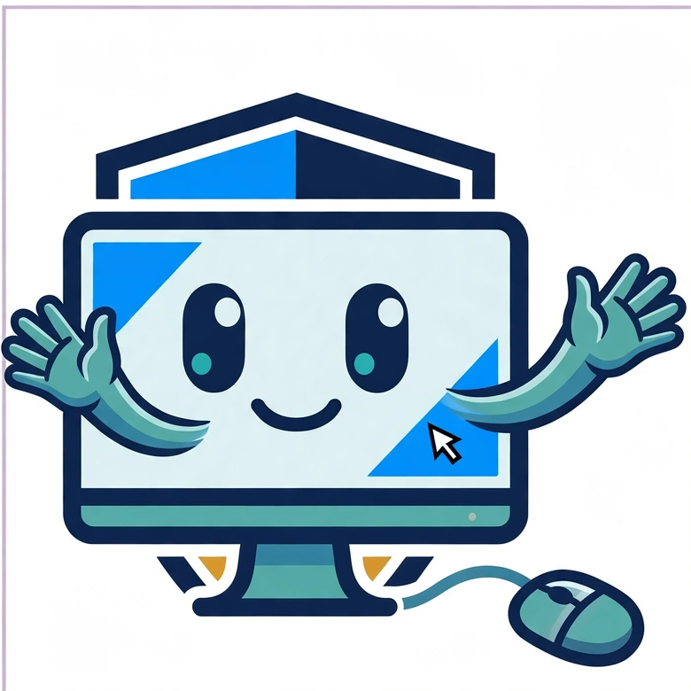
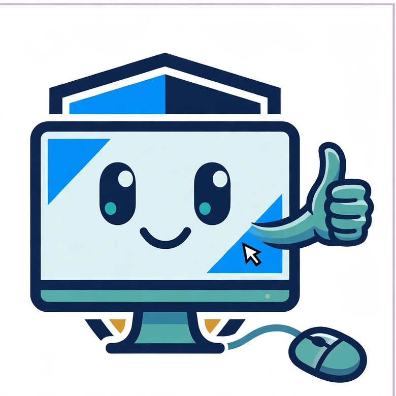

DeskGuest
DeskGuestThe full tour
Everything DeskGuest does
One product, two installs per platform, nothing held back for a paid tier — there isn't one. This page walks the whole product, family by family.
Presence & consent — the heart of it
Help can only happen while you can see it. Three things are on your screen for every session, and nothing — no setting, no policy — can turn them off.
The Box
A banner names exactly who is connected — a person or a named AI agent — what they are doing, and carries a red STOP button that always works.
The Ghost
Your helper's pointer is a ghost: a ring carrying their initial, never confused with your own cursor. You watch every move as it happens.
The Glow
A soft edge of light around your screen while a session is live, so a connection is visible even from across the room.
You can take back control
Touch your mouse or keyboard and you're driving again — your helper's pointer dims and waits. How that hand-off behaves (take over, share, or hotkey only) is your setting, chosen on your device.
Approvals before actions
Anything that matters — sending a file, changing a setting, running a command — arrives as a clear action card. Your tap is the approval, and it's written into the session record.
Background Work Only
Mid-session, you can hold all screen work with one toggle. Your helper keeps doing permitted background work, the held items are counted where you can see them, and the banner stays up.
Many ways to connect — chosen automatically
DeskGuest sets up its own connections. It tries the most direct road first, steps down to the next when a road is blocked, and steps back up when the better road returns. The road in use is always shown, honestly.
Same network
Direct, device to device, on your own Wi-Fi or office network. Nothing leaves the building.
Across the internet
Direct where your connection allows it; otherwise through sealed relays that can carry a session but can never read one.
Your own hub
Run the optional hub on a machine you own and your devices can always find each other through it — still sealed, still yours.
There are also privacy-heavy options (a swarm phone-book that finds devices without any server knowing the list, and a Tor road) and, for people who already have one, their own mesh network. Switching roads never means pairing again. How the sealing works →
Quick Fix — help for anyone, in seconds
For the "my computer is doing something weird" moments, there is a tiny separate app: DeskGuest: Quick Fix.

One linkClick and you're talking
One invite link opens a session in the browser — voice, chat, screen sharing. No download, no account, no codes read aloud.
 One more tap
One more tapLet them take over
When watching isn't enough, one tap brings in a one-time helper program for full control — under the full presence rules.

Hang upIt removes itself
When the session ends, the helper program deletes itself and the link dies. Nothing is left behind, ever. Quick Fix can never be used to reach a device unattended.
Rooms & live collaboration
Fixing a machine? Start a session. Gathering people? Host a room.
Sessions
The live event, on one device: screen, voice, chat, file transfer, and — when the owner allows — control. People and AI agents can join the same session, each under their own name and permissions.
Rooms
A standing meeting place owned by a group: named members, one standing invite link, and a memory — session records, notes, transcripts, and receipts are filed in the room where they happened.
Working side by side
Two drivers can work at once, each with their own named ghost pointer, and everything either of them does is attributed to them in the record. An AI can also join just to watch, take notes, and point things out — without driving.
Talk to your AI
Paired AI agents can speak and listen in a session, with a voice you choose for them. Voice works offline with the built-in voices; an agent can also bring its own.
Groups, devices & your fleet
Your devices find each other by introduction, not by account. Everything you own syncs — your device list, groups, profile, and settings — sealed, over the same connections.
Your circle
Your own devices form a private circle. Add a device once, from a device you already trust, and it belongs.
Groups
Family, a workplace, a customer site — each group has its own members, its own sealing, and its own admins. Groups can't read each other.
The endpoint never sees the fleet
A device you help sees only the people and agents paired to it. Your other devices and groups are not listed there — they aren't hidden, they're absent.
The workplace pack
The same product, run by an organisation: monitoring and alerts, patch management with approvals, inventory, backups, and evidence packs an auditor can read — every feature governed by signed policy, with an Effective Policy view that shows exactly what applies to any device. For Workplaces → · For IT →
Policy that can't be quietly changed
Settings flow from signed policy with inheritance. What a device actually runs under is one view away, and changes are audited.
Camera viewing, with manners
Standard security cameras can be viewed inside device groups — every view is permissioned, audited, and can be switched off by policy. Audio is off by default.
Offboarding in one action
Remove a person and you first see the full list of what changes — their access, their devices, their agent pairings — then confirm once.
Sign-in, the organisation's way
An organisation can gate key use behind its own sign-in system, on its own tenant, with its own multi-factor rules. DeskGuest still holds no account and receives nothing.
Make it yours
Every part of DeskGuest can be tuned — and every tune is optional, with a sensible default, so nobody has to make a decision to get started.
Faces
Pick your face and your agents' faces from large built-in galleries — professional, modern, and fun — or upload your own. A paired AI's face is a safety feature: you learn to recognise your helper.
Pointers
Your helper's ghost pointer comes in galleries too — professional, minimal, and fun — recoloured per agent, with size and name-tag options.
Presence, your way
Banner size, glow intensity, border styles, sounds — all adjustable, within a floor that can't be crossed: presence is never invisible, the driver is always named, and STOP is always there.
Session feel
Picture quality versus smoothness, which screen is shared first, clipboard defaults, where received files land, and your own shortcuts for taking back control.
No account — and still a way back in
Losing every device you own shouldn't mean losing your digital life. DeskGuest gives you several independent doors back in; any one of them is enough.
Another of your devices
Any surviving device can welcome a new one in.
A recovery file
Sealed with a password only you know. Keep it anywhere — it's useless without the password.
A trusted person
Their device holds a sealed piece that opens nothing alone; restoring needs their tap of approval.
You can also split your way back into pieces kept in different places (any two of three restore you), or keep the classic word sheet. Settings always shows how many ways back in you have — and only nags when the answer is none.